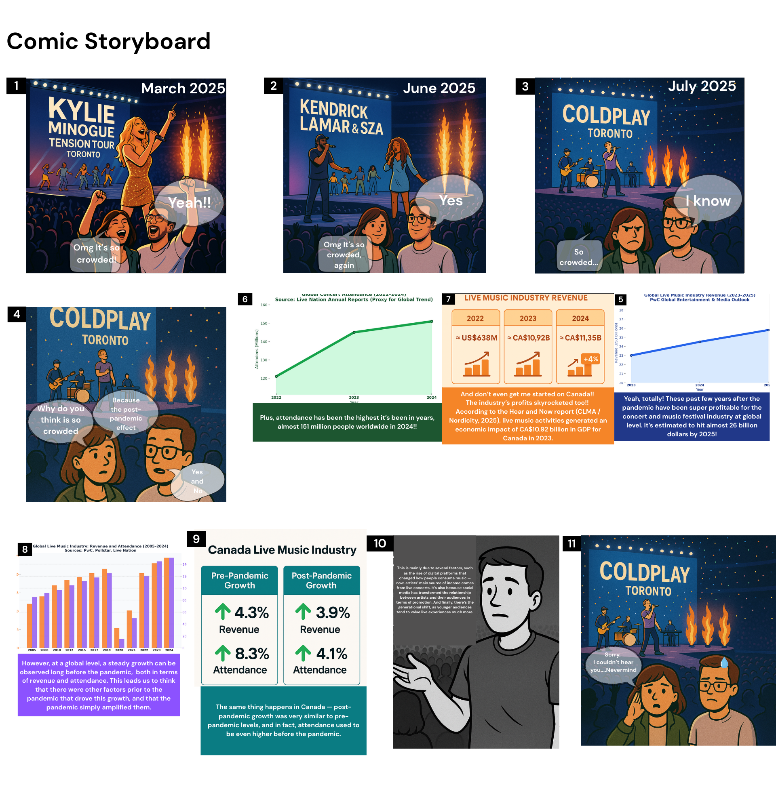
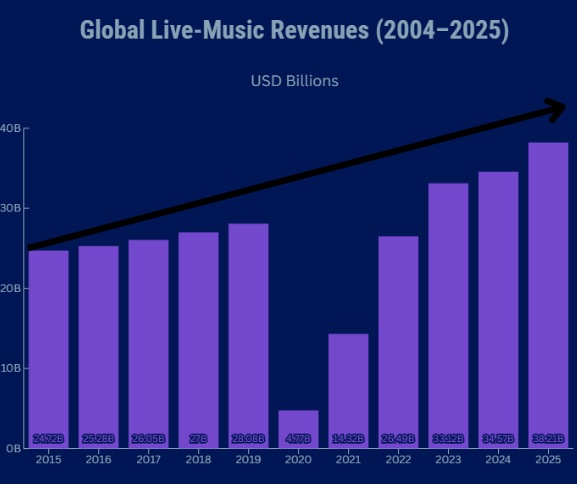

Overview
This project explores why concerts feel more crowded than ever by turning a data-driven explanation into
a comic-style narrative. Using real live-music revenue data and a series of illustrated scenes, the comic
blends storytelling, humor, and charts to explain how post-pandemic demand, long-term industry growth,
and cultural shifts all converge in the current live-music boom.
The Story
The comic follows two friends attending several concerts in Toronto in 2025 — from Kylie Minogue to
Kendrick Lamar & SZA and Coldplay. At every show, they keep noticing the same thing:
“OMG, it’s so crowded!”
Their conversation becomes the narrative spine of the piece. As they react to the crowd, they gradually
introduce real data:
- how global live-music revenues grew before and after the pandemic,
- why touring has become a primary source of income for artists,
- and how streaming, social media, and generational preferences all push people towards live experiences.
By the final panels, the characters realize that what feels like a post-pandemic exception is actually the
visible part of a long-running structural trend in the live-music industry.

Early storyboard sketches used to structure scenes, pacing, and data placement.
Data & Key Insight
The charts embedded in the comic highlight two main ideas:
-
The rebound effect after COVID-19. There is a visible spike in global live-music revenues
in the years immediately after the pandemic, as audiences return to concerts and festivals.
-
The long-term structural growth. When looking at a longer time span (2004–2025), live-music
revenues have been growing steadily for years. COVID-19 appears more as a temporary setback than the main
cause of the trend.
The key insight:
crowded concerts are not just a “post-COVID” phenomenon. They are the outcome of long-term shifts in how music
is produced, monetized, and experienced.

One of the revenue charts embedded directly into the comic layout.
Creative Process
1. Concept and narrative framing.
I started with a simple question – “Why are all my concerts so packed?” – and decided to answer it
through a comic rather than a traditional dashboard. The goal was to make the explanation feel personal, visual,
and emotionally relatable.
2. Storyboarding.
Before designing any final panel, I sketched a storyboard that defined the main scenes, where the charts would
appear, and how the dialogue would introduce each data point. This helped control pacing: setting up the problem,
revealing the data, and landing the conclusion without overwhelming readers.
3. Visual design and illustration.
I used a colorful, comic-book aesthetic — speech bubbles, sound effects, strong contrasts and crowd silhouettes —
to create an energetic atmosphere. The characters act as guides, reacting to the environment and asking the
questions that the audience might have.
4. Data integration.
The charts are embedded inside the comic as part of the world: a panel becomes a graph, a speech bubble points
to a revenue curve, and annotations highlight key years. This keeps the data present without breaking the
narrative flow.
5. Assembly and refinement.
Once the panels, charts, and text were ready, I arranged them vertically so the piece works as a scrolling
experience. I edited the dialogue to keep it concise and focused on the main story: from crowded venues to the
bigger picture of the live-music industry.
Tools Used
Canva – comic layout, illustration composition, speech bubbles, and visual effects.
Flourish – creation of the bar/column charts for global live-music revenues.
Storyboard sketches & drawing tools – to plan pacing, panel sequence, and data placement.
Image editing tools (e.g., GIMP/Photoshop) – minor color and layout adjustments.
What I Learned
This assignment helped me practice translating quantitative analysis into a narrative format that feels
approachable and memorable. In particular, I learned how to:
- Use characters and dialogue to make complex trends more intuitive.
- Integrate charts into a visual story world without losing readability.
- Balance aesthetics and clarity so the piece is fun to read but still analytically grounded.
Overall, this project is a strong example of how I combine analytical thinking with creative visual storytelling
to communicate insights in ways that people actually remember.